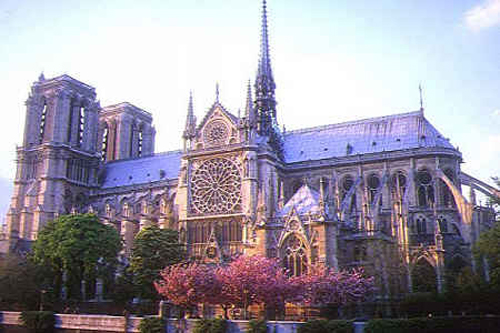

Cultura
Íntimamente ligada a un desarrollo cultural incesante en todas las áreas, y en particular en las que se refieren a las letra y a las artes, la ciudad de París siempre ha sido considerada como la cuna de la cultura de Francia.
Desde la edad media, Francia se ha destacado como un centro cultural en Europa. El aumento de su riqueza, a través de la subvención al arte que la monarquía realizó durante varios siglos, fue el factor más importante que atrajo hasta París a los mayores talentos europeos.
Un aumento importante de la riqueza fue también, el que permitió en el pasado el crecimiento de una clase muy acomodada económicamente que comenzó a practicar el arte de la elegancia tanto en la vestimenta como en un refinado comportamiento social. Además. pudo verse reflejado en el diseño y la arquitectura a través del desarrollo de estilos que todavía perduran.
La acción de personajes importantes como Jean-Baptiste Chardin o Napoleón nombrando a Jacques Louis David, líder de la Revolución de 1789, como pintor oficial del Estado, unida a la gran producción literaria representada con importantes nombres como Voltaire y Rousseau, le dieron un brillo especial a la cultura de Francia.
En la música se destacaron Claude Debussy, Maurice Ravel y Berlioz, responsables de un renacimiento musical importante. Figura famosa del Romanticismo francés del siglo XIX, Victor Hugo, fue el fiel exponente de una evolución hacia los nuevos movimientos de la literatura. Destacándose también el poeta Arthur Rimbaud, con sus famosas obras tituladas Iluminaciones y Una temporada en el infierno. En la escultura se destaca Auguste Rodin, considerado como uno de los mejores exponentes de la cultura francesa, a través de majestuosas figuras de mármol y bronce.

Llegado el post-impresionismo el siglo XX da lugar a una variedad de estilos dentro de la cultura de Francia, con Picasso y Matisee. También a principios del siglo XX se destaca Marcel Proust en la literatura con su famosa novela En busca del tiempo perdido, así como los poetas André Bretón y Paul Eluard Posteriormente y terminada la Segunda Guerra Mundial aparece el Existencialismo de la mano de Jean-Paul Sartre, Simone de Beauvoir y Albert Camus. De 1950 a 1960 se produce una innovación importnte en el cine frances con directores nuevos como Jean-Luc Godard y Louis Malle, La evolución de una cultura que se extienden desde el arte en todas sus expresiones a nuevas formas de entretenimiento como el fútbol y el ciclismo representado por el famoso Tour de France que acapara la atención de toda la población francesa.
Bailes Tipicos
 Los franceses son por naturaleza muy aficionados a la música y a la danza, razón por la cual han logrado inventar varios bailes de fama mundial, una de las invenciones de la nación gala es el famosísimo Ballet siendo una de las danzas más populares de todo el mundo. Para este país siempre ha sido tan importante la danza que el rey francés Luis XIV escudado en su pasión por la danza llevó a cabo la creación de la Académie Royale de Danse, lo que contribuyó significativamente al desarrollo del estilo de baile y la técnica a fines del siglo 17 y principios del siglo XVIII en toda Europa.
Los franceses son por naturaleza muy aficionados a la música y a la danza, razón por la cual han logrado inventar varios bailes de fama mundial, una de las invenciones de la nación gala es el famosísimo Ballet siendo una de las danzas más populares de todo el mundo. Para este país siempre ha sido tan importante la danza que el rey francés Luis XIV escudado en su pasión por la danza llevó a cabo la creación de la Académie Royale de Danse, lo que contribuyó significativamente al desarrollo del estilo de baile y la técnica a fines del siglo 17 y principios del siglo XVIII en toda Europa.
Durante este periodo de tiempo los salones de fiestas y bailes cuadrados crecieron en popularidad en Francia y en toda Europa, aun así casi todas las regiones de Francia tiene sus propios estilos, tanto en la música y como en las danzas.
La base de la mayoría de la música francesa está desarrollado sobre la base de las danzas que se usan para el cómo vals, polca, mazurca, Las Marcas, Escocia, Rondeau y el Bourree, así como también en el país son de gran influencia los villancicos y las danzas barrocas.